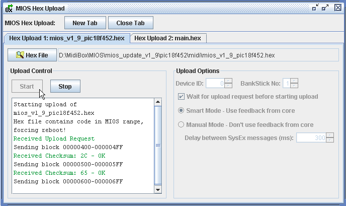
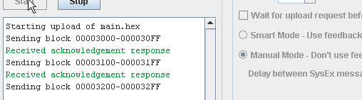

The MIOS Hex upload allows hex files for MIOS and MidiBox applications to be upload via SysEx messages. The hex file memory dump will be transmitted in a scrambled form, since the SysEx protocol doesn't allow the transfer of 8-bit values. Instead the whole dump will be sent in 7-bit packages, and converted back by the receiver to 8-bit values.

There are two methods for package flow control: A "smart" mode and a "manual" method. The first "smart" mode uses feedback from the core to control the rate of sending packages.
In "this mode, packages are only sent once the previous write acknowlede message is recieved. If an error message is encountered or a bad checksum is received, the previous package is resent. After three failed attempts, the upload process is aborted.
The manual method will upload each package after a given delay time. Acknowledge and error messages will be displayed but will not have any effect on the upload process.

The "Wait for upload request..." option is useful for uploading MIOS updates as the first package must be sent within two seconds of receiving the "Request for Upload" SyxString. An easy way to control this is: